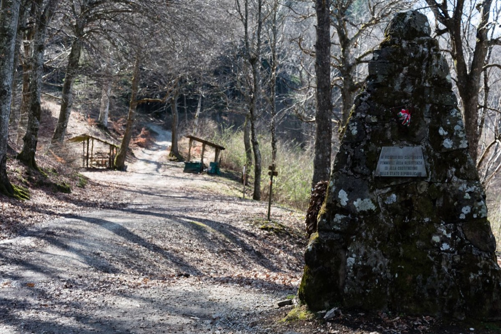

Percorso 9 · Storico
Il Mugello che non si arrende
I percorsi dei partigiani e la lotta per la Liberazione
A PiediIn BiciCon il Tuo Cane
A Piedi
- Durata
- 2 giorni
- Lunghezza
- 50 Km
- Difficoltà
- Difficile
- Dislivello
- 2513 Mt
MTB/EBIKE
- Durata
- Mezza Giornata
- Lunghezza
- 25 Km
- Difficoltà
- Medio
- Dislivello
- 1339 Mt
Traccia (50,5 km)Variante MTB (26,8 km)Partenza e arrivo
Porta il percorso con te
Scarica la traccia per il navigatore o per un'app come Komoot, OsmAnd o Wikiloc.
Traccia GPX MTBTraccia GPXScheda completa su Orme del Mugello
Sentieri e cammini attraversati
- Sentieri CAI
- nr. 12 - nr. 11 - nr. 11 B - nr. 9 - nr. 9 A - NR. 56
- Cammini
- SOFT 5 - SOFT 6 - SOFT 17
Descrizione del percorso
Leggi il racconto di Orme del Mugello
Il cammino inizia dal centro di Vicchio (200 m), paese mugellano reso celebre dagli artisti che hanno avuto i propri natali in questo luogo.
Il percorso consiste in un doppio anello con partenza Vicchio. Il primo di questi è in direzione sud, verso il Parco storico di Monte Giovi, il secondo si spinge a nord verso la Linea Gotica.
La versione dedicata ai Mountain Biker, rispetto alla versione a piedi, percorre solo l’anello sud del percorso e lo si percorre in senso inverso in quanto più fruibile e divertente; evita anche la vetta di Monte Giovi in quanto la salita non è pedalabile: aggira la vetta sulla bellissima forestale dei Prati Piani fino al Monumento della Resistenza.
Usciamo dal paese oltrepassando il Fiume Sieve all’altezza di Ponte a Vicchio. Imbocchiamo il sentiero in lieve salita. Superato il vicino lago Viola, ci imbattiamo nel primo segno tangibile che la Seconda Guerra Mondiale ha lasciato in questi luoghi: il Monumento Martiri di Padulivo. Tra le pagine più tragiche della sua storia vi è la strage di Padulivo, un evento che ancora oggi riecheggia nella memoria collettiva. Era il 10 luglio 1944 e la guerra stava mostrando il suo volto più crudele. La fattoria di Padulivo, un’ampia casa colonica che in quei giorni accoglieva oltre centocinquanta persone, tra cui molti sfollati da Vicchio, divenne il bersaglio di un Reparto di SS tedesche composto da circa sessanta uomini. Giunti con il pretesto di requisire bestiame, i soldati concentrarono rapidamente i loro sospetti su Aldo Galardi, il proprietario della fattoria, ritenuto vicino ai partigiani che si nascondevano tra le montagne. Durante la perquisizione, si accorsero che un cavallo era stato allontanato poco prima. Minacciarono di incendiare la fattoria se non fosse stato restituito. Nel tentativo di scongiurare il peggio, una donna si offrì di recuperarlo. Quel gesto, però, permise ai partigiani di Monte Giovi di ricevere un prezioso avvertimento sulla presenza e sulla forza del contingente nazista. Poco dopo, lungo la strada, i partigiani attaccarono: un soldato tedesco rimase ucciso, un altro ferito. La rappresaglia fu immediata. Le SS tornarono alla fattoria e la diedero alle fiamme, catturando tutti coloro che vi si trovavano. Più di cento persone, tra uomini, donne e bambini, furono costrette a marciare verso Vicchio. Giunti al ponte dove si era verificata l’imboscata, la vendetta dei nazisti si compì nel modo più crudele. Dieci uomini e la donna che aveva riportato il cavallo furono trucidati sul posto. Solo uno di loro sopravvisse per qualche tempo, ma le ferite riportate non gli permisero di riprendersi. Gli altri prigionieri trascorsero la notte a Vicchio, in attesa dell’interrogatorio. Il giorno seguente, vennero tutti rilasciati, tranne quattro uomini e tre donne. Gli uomini furono costretti ad accompagnare i tedeschi in un’ulteriore razzia di bestiame, poi ricondotti sul luogo dell’imboscata e fucilati senza pietà. Oggi, a Padulivo, una lapide in pietra ricorda i nomi di quei quindici innocenti caduti per rappresaglia: Bastianelli Pietro, Calzolai Valeriano, Fibbi Attilio, Gabellini Antonio, Galardi Aldo, Giudici Maria, Gottardi Renzo, Landi Annibale, Menicucci Aurelio, Parigi Giovacchino, Poggiali Renato, Santoni Nello, Zagli Ettore, Zagli Nello, Banchi Mario. Nel cinquantesimo anniversario della Resistenza e della Liberazione, il Comune di Vicchio ha voluto lasciare un monito inciso accanto ai loro nomi: “La storia non si ripete, se non nella mente di chi non la conosce.” (Gibran Khalil Gibran)
La salita a Barbiana, la stessa percorsa da Don Milani al suo arrivo, segna l’inizio di un percorso che conduce alla scoperta di un’educazione fondata sulla partecipazione e sull’impegno civile. Qui, nel 2011, la Fondazione Don Lorenzo Milani ha inaugurato il Percorso della Costituzione, un sentiero nel bosco con 44 bacheche che illustrano gli articoli della Costituzione Italiana, progettate da studenti per legare l’insegnamento del Priore ai principi fondamentali della democrazia. Per Don Milani, educare significava formare cittadini consapevoli, in grado di difendere i propri diritti e la libertà collettiva. La Costituzione, frutto della Resistenza, rappresenta un’eredità da proteggere e applicare ogni giorno. Accanto a questo itinerario, la Fondazione ha realizzato il Sentiero della Resistenza, che collega la memoria partigiana alla riflessione costituzionale. Il cammino parte dal cippo della strage di Padulivo (10 luglio 1944) e arriva a Monte Giovi, un tempo rifugio dei partigiani. Lungo il percorso, 33 pannelli, creati da studenti, raccontano episodi di lotta, lettere di condannati a morte e immagini storiche. Questi sentieri intrecciano memoria e impegno civile, ricordandoci che la democrazia vive solo se la difendiamo ogni giorno, con consapevolezza e responsabilità.
Arriviamo quindi nel piccolo borgo di Barbiana (470 m), oggi simbolo di giustizia sociale e diritto all’istruzione grazie all’opera di Don Lorenzo Milani. La sua storia, legata alla parrocchia di Sant’Andrea, risale al XII secolo, ma il luogo sarebbe rimasto sconosciuto se nel 1954 Don Milani non vi avesse preso dimora. Il suo trasferimento, in realtà una punizione, si trasformò in un’esperienza educativa rivoluzionaria. Nella canonica, il sacerdote fondò la Scuola di Barbiana, aperta ai ragazzi esclusi dal sistema scolastico tradizionale. Qui si insegnavano non solo le materie scolastiche, ma soprattutto il valore della parola come strumento di emancipazione. Il suo approccio, basato su rigore, solidarietà e partecipazione, culminò nel libro Lettera a una professoressa, una denuncia contro le disuguaglianze educative. Don Milani fu un innovatore del pensiero cristiano e sociale, sostenitore degli ultimi e promotore dell’obiezione di coscienza. Il suo motto, "I care", ancora oggi campeggia all’ingresso della scuola. Dopo la sua morte nel 1967, Barbiana è diventata meta di pellegrinaggi e sede della Marcia di Barbiana, momento di riflessione sull’educazione e la giustizia. Oggi, la scuola è un museo che conserva la memoria di un uomo che ha trasformato l’istruzione in un atto di resistenza e speranza.
Da Barbiana si sale verso la vetta di Monte Giovi (992 m). L’ascesa alla cima è caratterizzata dal passaggio in luoghi simbolo della Resistenza Toscana. Si passa dal borgo di Tamburino, nato nel XV secolo come ospitale per viaggiatori e poi divenuto un complesso colonico nel XVIII secolo. Durante la Seconda Guerra Mondiale, il luogo assunse un ruolo cruciale: i tedeschi vi allestirono un campo di prigionia, dove, all’8 settembre 1943, circa 100 prigionieri di guerra si ritrovarono senza carcerieri né risorse. Le popolazioni locali, pur nella miseria, offrirono aiuto, mentre i partigiani crearono legami di solidarietà con i prigionieri. Tamburino divenne così un simbolo di resistenza e lotta per la libertà.
Poco meno di un chilometro dal raggiungimento della vetta del Monte Giovi, altri due luoghi ci raccontano delle battaglie avvenute in questi boschi. La Piramide dei Partigiani è un monumento simbolo della Resistenza toscana. Costruita in memoria dei combattenti della Brigata Spartaco Lavagnini, che tra il 1943 e il 1944 operarono nella zona, la Piramide ricorda il sacrificio di chi lottò contro l’occupazione nazifascista. Monte Giovi, con la sua posizione strategica tra il Mugello e la Val di Sieve, offriva ai partigiani un rifugio sicuro da cui colpire le truppe nemiche con azioni di guerriglia.
Sulla Piramide sono incisi i nomi dei caduti, affinché il loro coraggio non venga dimenticato.
Si racconta che alcuni partigiani, durante un rastrellamento tedesco, riuscirono a salvarsi nascondendosi nei pressi del monumento, mentre altri furono catturati e giustiziati. Ancora oggi, il loro sacrificio viene ricordato nelle cerimonie annuali, mantenendo viva la memoria della lotta per la libertà. Altro punto del ricordo è la Fonte alla Capra, poco distante dal monumento che ricorda i partigiani. Si raggiunge la vetta del Monte Giovi (992 m). Il monte domina il paesaggio tra il Mugello e la Val di Sieve, offrendo una vista che si estende fino a Firenze e agli Appennini. Ma oltre alla sua bellezza naturale, questo monte è un luogo ricco di storia, attraversato da eventi che spaziano dalla Preistoria alla Resistenza Partigiana. Il nome “Giovi” potrebbe derivare dal latino "Juppiter", in riferimento al dio Giove, o da un’antica radice etrusco-latina che ne indica la sacralità e la posizione elevata.
Le prime tracce umane risalgono alla preistoria, con popolazioni come i Liguri e gli Etruschi che sfruttarono il monte per scopi strategici e religiosi. In epoca romana, Monte Giovi era attraversato da vie di comunicazione che collegavano il Mugello a Fiesole e Firenze. Durante il Medioevo, divenne un punto strategico conteso tra nobili famiglie fiorentine, mentre i suoi boschi ospitavano monasteri, eremiti e pellegrini. Avvolto spesso dalla nebbia, ha ispirato leggende su spiriti e monaci erranti. Più di una montagna, è un simbolo di storia, spiritualità e resistenza.
la Fonte alla Capra
La zona della Fonte alla Capra ospitò la Brigata Spartaco Lavagnini, una delle formazioni più attive nella resistenza toscana. I partigiani si rifugiavano nei boschi e utilizzavano questa fonte come essenziale punto di approvvigionamento, sia per l’acqua che per l’organizzazione delle azioni di guerriglia. Si racconta che, in più di un’occasione, i combattenti si siano nascosti proprio nei pressi della fonte, approfittando della vegetazione fitta e della posizione isolata, riuscendo così a sfuggire ai rastrellamenti tedeschi. Oggi la Fonte alla Capra è un luogo della memoria, visitato da escursionisti e appassionati di storia. Ogni anno, nel mese di aprile, si svolgono camminate e commemorazioni per ricordare il sacrificio di chi qui lottò per la libertà
Una lunga discesa ci porterà a Vicchio, concludendo di fatto il primo anello di questo cammino legato ai luoghi della Resistenza. Iniziamo quindi il secondo anello, uscendo dal Paese in direzione Pilarciano. Si oltrepassano le località di Padule, Torre e Sant’Antonio.
Si arriva a Gattaia, dove una targa in pietra ricorda Ottorino Quiti e Adriano Santoni, due giovani partigiani fucilati il 22 marzo 1944 al Campo di Marte di Firenze dai nazi-fascisti. Il paese fu un punto chiave della Resistenza, ospitando una base operativa partigiana. Il 6 marzo 1944, da qui partì un’azione decisiva: i partigiani di Gattaia, insieme a quelli del Monte Giovi, lottarono per liberare Vicchio di Mugello dall'occupazione nazifascista. La targa rappresenta un monito contro la violenza e ogni anno la comunità si riunisce per onorarne il sacrificio.
Proseguendo sul sentiero, dopo circa 3 chilometri, si raggiunge la Stazione abbandonata di Fornello.
La Stazione di Fornello, situata lungo la storica ferrovia Faentina tra Borgo San Lorenzo e Marradi, un tempo era un crocevia vitale per il trasporto di merci e persone. In particolare, serviva la miniera sovrastante, dove si estraevano minerali per le industrie, inclusa la costruzione della stessa linea ferroviaria. Durante la Seconda Guerra Mondiale, la stazione e la miniera divennero luoghi strategici per la Resistenza, con i partigiani che utilizzavano le gallerie come rifugi e compivano sabotaggi contro i nazifascisti. Con il declino della miniera e la diminuzione del traffico ferroviario, la stazione cadde in disuso, diventando un luogo dimenticato. Negli ultimi anni, però, è stato valorizzato ed è ora riconosciuto come "Luogo del Cuore" dal FAI. Oggi, Fornello è un sito di memoria, che unisce la storia del lavoro nelle miniere, il ruolo della ferrovia e la lotta per la libertà durante la Resistenza. Oltrepassiamo la stazione compiendo un piccolo anello. Ritorniamo dunque sul sentiero in direzione Gattaia. Si raggiungono le località di Molezzano e di Caselle. In quest’ultimo luogo, il Circolo 12 Maggio delle Caselle, custodisce la Lapide Martiri di Campo di Marte, la quale racconta una storia di sacrificio e di lotta. Non è solo un pezzo di marmo incastonato in un muro, ma un monito inciso nella memoria collettiva, il segno tangibile di un dolore che non si è mai spento.
Siamo giunti a Vicchio, meta ultima del secondo anello e del cammino che ricorda i luoghi dove si è combattuta la Resistenza.
Dormire, mangiare e prodotti lungo il percorso
Strutture ricettive (32)
- Agriturismo Le Pozze contatti
- Agriturismo Poggio Bartoli contatti
- Area Di Sosta Vecchio Ponte contatti
- BeB IL PITTORE contatti
- BeB KINGA contatti
- BeB LE DUE VOLPI contatti
- Casa Torta contatti
- Castello Del Monsignore contatti
- Fattoria Le Case contatti
- Il Gallo Birichino contatti
- IL MUGELLO BeB contatti
- Il Muretto contatti
- Il Podere Di Tullio contatti
- Il Poggio Alle Ville contatti
- Il Villino contatti
- La Colombaia contatti
- La Fattoria Del Farneto contatti
- La Stazione Di Monta contatti
- MONSIGNOR DELLA CASA COUNTRY RESORT eSPA contatti
- Podere Moiata-Fattoria Di Campestri contatti
- Podere Ugolini contatti
- Poggio A Sieve contatti
- Residenza Di Campagna Montelleri contatti
- Rupecanina contatti
- Short Term Rental In Vicchio contatti
- Sommavilla contatti
- Villa Campestri contatti
- Villa Dalia contatti
- Villa Di Pilarciano contatti
- Villa La Commenda Concordia contatti
- Villa Le Case contatti
- Villa Maltempo contatti
Aziende (6)
- Azienda Agricola Poggio dei Roti contatti
- Bacco del Monte di Elena Bartalucci contatti
- Banco Fiorentino - Filiale di Vicchio
- Il Poggio alle ville di Raffaele Edlmann contatti
- Poggio a Sieve - Casa Vacanze
- Società agricola Il Ponte di Trotta Rocco e Lompi Stefania s.s. contatti
Il nome della struttura porta al suo sito web; "contatti" apre la scheda con telefono e mail sul portale turistico Mugello Toscana (per chi non ha un sito c'è solo quella). Le aziende portano ai loro siti. Sono tutte segnate anche sulla mappa.
Percorso, traccia e testi di Orme del Mugello, pubblicati con il loro permesso.